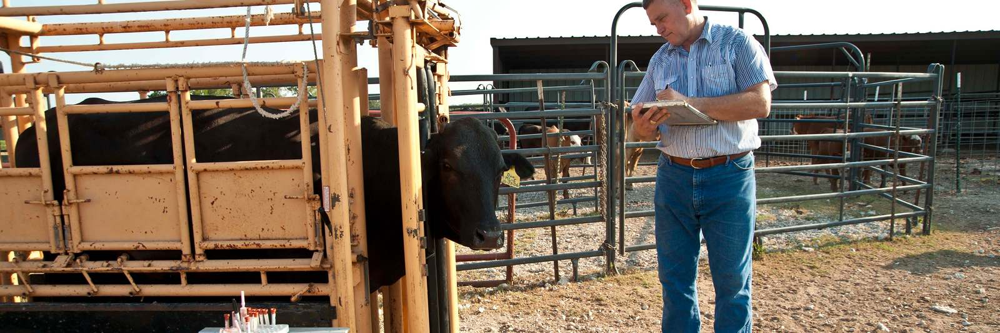
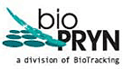
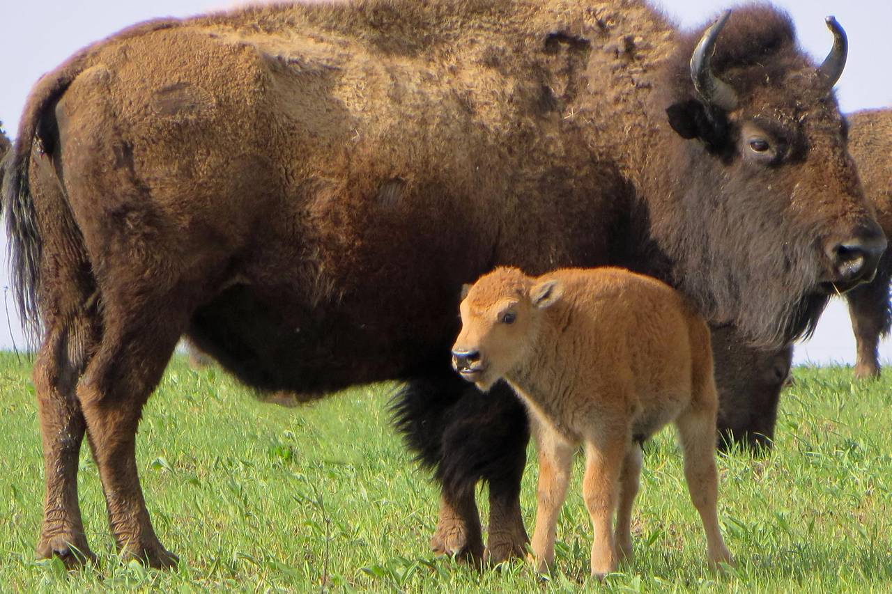

BioPRYN® blood pregnancy testing
You don't milk your cows by hand anymore. Now you don't have to pregnancy check them the old way either. BioPRYN is a safe and accurate blood test for pregnancy in cattle, bison, goats and sheep.
Safer for cow and crew
A small (2cc) sample of blood, drawn 28 days or more after breeding, is all that is required to run the pregnancy assay. Blood sampling is safer than either palpation or ultrasound, and every bit as dependable at finding open animals.
With BioPRYN, no embryo or uterine touching is required, eliminating this possible cause of pregnancy damage and loss. Unlike rectal techniques, using single-use blood collection needles for pregnancy diagnostics eliminates disease transmission between herd mates. Cows also appear less apprehensive about blood sampling than about rectal palpation, which makes the job safer for the person drawing the sample.
How accurate BioPRYN is

The Enzyme-Linked Immuno-Sorbent Assay (ELISA) laboratory process detects the presence of a protein called Pregnancy Specific Protein B (PSPB). PSPB is produced by the developing placenta and begins circulating in the blood of pregnant cattle as early as 3 weeks of gestation. The test waits until 28 days so the level is high enough to call with confidence. Since non-pregnant animals will not have this protein in their blood, the test is more than 99% accurate in detecting open cows (BioTracking's published figure).
This high accuracy of open detection gives the test a wide safety margin over older progesterone-based tests. With an error rate under 1%, the test is as dependable as palpation or ultrasound at confirming an open animal, and safer for the cow.
In addition, Early Embryonic Death (EED) can sometimes be detected by the blood test, since subnormal levels of PSPB may indicate a pregnancy in trouble.
Price per test
28-day cattle and bison pregnancy test
$3.50 per test
Goat and sheep pregnancy test
$7.00 per test
For a large herd, call (715) 653-2201 for a quote.

Every result runs on the BioPRYN platform. BioPRYN is a registered trademark of BioTracking, LLC.
Heifers and large herds
Virgin heifers can be tested 25 days after breeding, three days earlier than cows. That makes blood testing the natural fit for heifers raised off-site. The grower's crew draws the samples on a day the heifers are already in the chute, and nobody has to schedule a veterinary visit to a lot two hours away. Open heifers go back on the breeding list before the next cycle.
For herds sampling in volume, the week runs like this: draw Monday and ship the same day, so the tubes land by Wednesday. The report is back Thursday, in time to put open animals on next week's protocol. Results come back by email, fax or phone, whichever you mark on the form.
Goats and sheep from 30 days
Goats and sheep run on the same blood test as cattle and are read by the same veterinarian. The 2cc sample is drawn from the jugular vein, from 30 days after breeding, and goes in with the Small Ruminant Pregnancy Test Submission Form. Most goat and sheep herds breed in the fall and check through the winter.
Goat and sheep owners will find the timing, the jugular draw and the form together on one page: pregnancy testing for goats and sheep.
Bison, without the chute fight

The assay is validated in bison at the same price as cattle. Draw when the animals are already in the handling system, mail the tubes, and skip the palpation.
Bison ranches and beef cow-calf herds have their own page: beef and bison herds by mail.
When can I test?
Cows and bison from 28 days after breeding, virgin heifers from 25, goats and sheep from 30. For goats and sheep, if the buck or ram ran with them, enter the day he came out.
For a cow that has calved. Cows should be at least 90 days since calving.
Cows and bison can be sampled 28 days after breeding, virgin heifers at 25, goats and sheep at 30. Samples that reach the lab by Wednesday are reported Thursday.
With Priority Mail, usually 2 days, ship by Monday. With overnight shipping, ship by Tuesday. A box shipped later is in the next week's report.
Priority Mail usually takes 2 days but is not guaranteed. Shipping a day earlier, or overnight, leaves a margin. A box that lands on a weekend or a federal holiday counts from the next lab day. If the report Thursday is a holiday, call (715) 653-2201 for that week's report day.
How to get started
First, select cows at least 90 days since calving and 28 or more days from their last breeding (virgin heifers from 25 days, goats and sheep from 30). Samples can be collected with a syringe and needle or with the vacuum tube system.
Ready to draw samples? See how to tail bleed a cow. Goats and sheep are drawn from the jugular vein instead; your veterinarian can show your crew once and they can take it from there.
Using a new needle for each cow, draw 2cc of whole blood into a new red-top tube clearly labeled with the animal ID. Package tubes in padding for safe delivery, then see our shipping instructions and download the test form to mail in with your blood sample.
Download your submission form
Cattle and bison
Cattle-Bison Pregnancy Test Submission Form
Download PDF, cattle and bison pregnancy formGoats and sheep
Small Ruminant Pregnancy Test Submission Form
Download PDF, goat and sheep pregnancy formFirst box? Please call our office before your first submission, at (715) 653-2201, or send the new client form. A call settles which supplies you need.
The vet reads your results
Every plate is read by the lab's veterinarian, Dr. Glenn Pearson. Your report lists each animal as pregnant, open or recheck.
What each result means, and the limits of a blood test: how your results are read.
When the results raise a question about the herd, Dr. Pearson also offers herd health consulting.